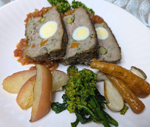

ミートローフ
- 調理時間：90分
- （一人当たり）
- カロリー：667kcal
- たんぱく質：58.2g
- 脂質：36.4g
- 炭水化物：22.7g
- 塩分：2.9g


＜9x17㎝のパウンド型＞
- ・牛赤身ひき肉
- 500ｇ
- ・玉ねぎ
- 1個
- ・マイタケ
- 1パック
- ・パン粉
- 大さじ１
- ・牛乳
- 大さじ１
- ・塩
- 小さじ1/２強
- ・こしょう
- 少々
- グリーンアスパラ
- 2本
- ニンジン
- 40ｇ
- うずら卵
- ６～7個
ミートローフ
- ・トマト
- 200ml
- ・玉ねぎ
- １/４個
- ・トマトケチャップ
- 適量
- ・ウスターソース
- 適量
ソース


- ＜下準備＞
アスパラガスとニンジンはパウンド型の長さに合わせて切り、耐熱皿に入れ600wのレンジで1分加熱する。 - 鍋にうずら卵と水を入れて火にかけ、沸いたら弱火にして３～3分半ゆでる。
冷水で冷やし、殻をむく。 - 玉ねぎ、マイタケはみじん切りにして、フライパンで炒め、塩、コショウ（分量外）で下味をつけ冷ましておく。
- 牛乳にパン粉を浸しておく。
- ＜ミートローフ作り＞
ボウルに赤身ひき肉、③、④、塩小さじ１/２、コショウを入れ、粘りが出るまで混ぜ合わせる。 - パウンド型に⑤の１/３量を入れ、グリーンアスパラ、うずら卵、ニンジンを等間隔にあけてのせ、残りの⑤を入れて、しっかり詰める。
最後に型を持ち上げて、トントンと落として、中の空気を抜く。 - 160℃のオーブンで約60分焼く。
粗熱が取れたら型から取り出し、切り分ける。 - 焼き上がったミートローフから出た脂をフライパンに移し、みじん切りの玉ねぎとトマトを加えて炒め、トマトケチャップとウスターソースを合わせてさらに煮詰め、ソースを作るお皿に⑧のソースをしき、切り分けたミートローフを盛り付ける。
- 【補足】
今回は、リンゴとニンジンのグラッセ、エリンギとブロッコリーのソテーを添えています。
ミートローフ
おなじみのミートローフですが、「健康レシピ」のご提案としては、使うひき肉を赤身肉にすること。赤身肉は脂肪やサシといわれる脂の少ない部位です。噛み応えがあり、うま味が凝縮されているので、牛肉本来の味を楽しむことができます。赤身牛肉に豊富に含まれる注目の栄養素はL-カルニチンです。この栄養素は、脂肪燃焼効果があるためダイエットや筋肉維持に重宝されます。食べる人の望む効果を考えて、食材を選ぶのも、料理人の醍醐味です。